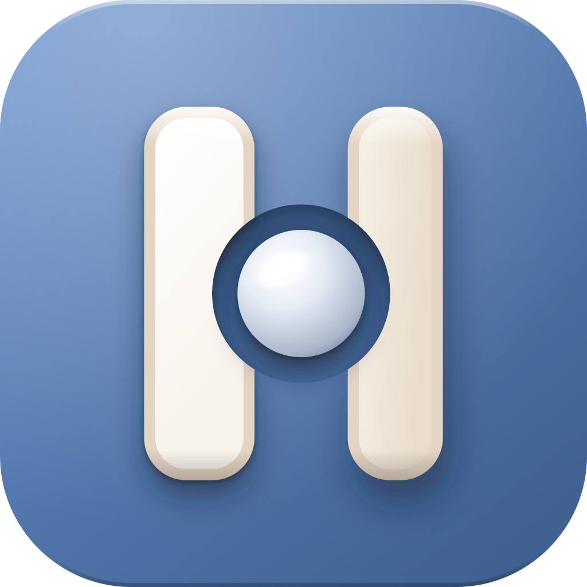

Montørappen for iPhone og iPad. Jobben, tegningene, målene og KS-sjekklista ligger i lomma.
Punkter, mål, piler og tekst rett på bildet, med Apple Pencil eller finger. Laseren kobles til, og målene går rett inn i bildet. Punktlista til høyre har samme nummer som i CRM og kundeportalen.
Alt montøren sender inn, legges først i en kø på telefonen og vises med en gang som om det var sendt. Når nettet kommer tilbake, sendes køen av seg selv.

Hengsel Ute er i test på iPhone, iPad og Android. Testsiden har lenkene og forteller hvordan du melder feil.